Research-Engineer CurriculumNo. 17 of 39 · Sept 2026 edition
GPU Architecture and Kernel Programming
Most of a model's training and serving cost sits inside GPU kernels. One matmul at 40 percent of peak and the same matmul at 90 percent differ in one way only. The difference is how well the kernel fits the hardware. (A matmul is a matrix multiplication, the core operation of every neural network layer.) This volume teaches you to think the way the hardware thinks.
- First, the execution model: threads, warps, blocks, and the SMs that run them.
- Second, the memory hierarchy, where the GPU wins or loses most speed.
- Third, occupancy and latency hiding, the reason GPUs tolerate slow memory.
- Occupancy is the share of the GPU's warp slots that your kernel keeps busy.
- Fourth, a diagnosis method built on the roofline model: given a slow kernel, you will know whether it waits on memory or on math.
- You will learn the suspects in order and how to confirm each one.
- Fifth, a real kernel written from scratch in Triton, a Python-embedded language for GPU kernels, and verified on CPU.
- Sixth, FP8 microscaling, the precision format behind modern training.
- Finally, torch.compile and 2:4 sparsity: the two compiler-level tools that take you most of the way without hand-written kernels.
Everything here builds on the mental model of real hardware. The numbers in the worked examples come from the H100 and B200, the two GPUs that define the current era. The labs use plain Python and run on CPU. You build the mental model before you ever touch a GPU.
Why machine learning lives on GPUs
Training a model means a huge amount of arithmetic. One training step of a large model does trillions of multiply-add operations. These are matrix multiplications in the forward pass, more of them in the backward pass, attention scores, and normalizations. A frontier training run needs about 1025 floating-point operations in total.
CPUs were built for a different job. A CPU has dozens of complex cores tuned for low-latency sequential work: running an operating system, a browser, a database. A top server CPU delivers roughly 1 to 2 trillion operations per second. Against 1025 operations, that is thousands of years.
The GPU makes the opposite design choice. It packs thousands of simple cores instead of a few clever ones, and it runs one program across millions of lightweight threads at once. An H100 delivers close to 2,000 trillion 8-bit operations per second: roughly a thousand times the throughput of a CPU. Machine learning fits this design, because every layer of a neural network applies the same operation to vast arrays of numbers.
That thousand-fold gap is why nearly all training and serving happens on GPUs. It is also why the exact fit between your kernel and the hardware decides your bill. Chapter 1 starts with the fit: how the GPU organizes its millions of threads.
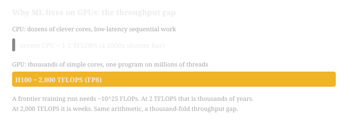
- Start with the two bars. The CPU bar is a sliver next to the GPU bar.
- The thousand-fold gap is why a frontier training run takes weeks on GPUs and thousands of years on CPUs.
- Takeaway: the GPU's design is thousands of simple cores, and ML's dense array math is the workload that design was made for.
Chapter 1. The GPU execution model: threads, warps, blocks, SMs
Before any optimization comes the machine. A GPU is millions of threads in a strict hierarchy. Every performance concept in this volume follows from that hierarchy. This chapter builds the mental model that supports everything else.
A GPU is a chip full of identical workers called streaming multiprocessors, or SMs. An H100 in the SXM board form factor (the socketed version that servers use) has 132 of them. Each SM is an independent core that runs thousands of lightweight threads. You write one program, called a kernel. The GPU launches millions of copies of it, one per thread, each working on different data.
The hardware organizes threads in a strict hierarchy. The smallest unit is the thread. 32 threads form a warp. Threads form thread blocks (often just "blocks"), and all blocks together form the grid. This hierarchy is not a suggestion. It is how the hardware schedules work.
CPUs hide complexity behind a few fast cores and clever caches. GPUs make the opposite design choice: they keep the cores simple and small, then place thousands of them on the chip. One H100 SM has 128 simple FP32 cores. With 132 SMs, that is 16,896 cores on one chip. No single core is fast. Together they are.
The warp is the key idea. The SM does not schedule individual threads. It schedules warps: groups of exactly 32 threads that run the same instruction at the same time. If you write y[i] = x[i] * 2, all 32 threads in a warp run that multiply in the same clock cycle, each on its own data. This is SIMT: single instruction, multiple threads.
When you launch a kernel, you choose a grid of blocks and a block size. The hardware assigns whole blocks to SMs. A block never splits across two SMs. Once assigned, the SM breaks the block's threads into warps and gives warps to its warp schedulers. An H100 SM has 4 warp schedulers. Each scheduler can issue one instruction per cycle to a ready warp.
Blocks stay on their SM until every thread in the block finishes. The SM can hold several blocks at once, up to its resource limits. When one block finishes, a new one replaces it. This is why you launch far more blocks than SMs: the extra blocks form a queue that keeps every SM busy.
A warp executes in lockstep. If threads in a warp take different branches of an if, the warp cannot do both at once. It runs the if branch with the taken threads active, then the else branch with the others active, while the rest wait. This is warp divergence, and it costs you the cycles that the idle threads burn. Keep branches uniform inside a warp whenever you can.
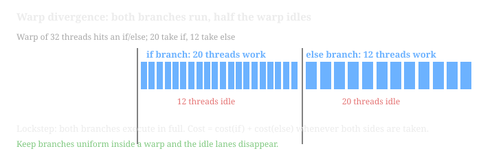
- Left phase: 20 threads work on the if branch while 12 wait. Right phase: the 12 work on else while the 20 wait.
- Total cost is cost(if) plus cost(else). Every thread pays both costs whenever the warp takes both sides.
- Takeaway: keep branches uniform inside a warp, and the idle lanes disappear.
Figure 1.2. The thread hierarchy and where it runs. Work the levels from left to right. Your kernel launch defines the grid. The hardware assigns blocks to SMs. Each SM runs its warps 32 threads at a time.
How to read this diagram
- Left edge: the launch. You pick the grid (how many blocks) and the block size (threads per block). This is the only part you control.
- Grid to SMs. The hardware scheduler gives whole blocks to SMs. Blocks are the unit of assignment. A 132-SM H100 wants thousands of blocks, never 132.
- Block to warps. Inside one SM, the block's threads split into warps of 32. A 256-thread block becomes 8 warps. The warp is the unit of execution.
- Warps to schedulers. The SM's 4 warp schedulers pick ready warps each cycle and issue one instruction per warp. When a warp stalls on memory, the scheduler picks a different warp. That swap is free, and Chapter 3 builds on it.
Worked example: mapping a vector add onto an H100
Take a vector of 1,048,576 float32 elements. You launch one thread per element with 256 threads per block.
- Blocks needed: 1,048,576 / 256 = 4,096 blocks.
- Warps per block: 256 / 32 = 8 warps.
- Total warps: 4,096 × 8 = 32,768 warps.
The H100 has 132 SMs. A 256-thread block uses 256 of the 2,048 threads an SM can hold. Each SM can host 2,048 / 256 = 8 blocks at once. That is 132 × 8 = 1,056 blocks resident at a time. Your 4,096 blocks arrive in waves: 4,096 / 1,056 = 3.88, so roughly 4 waves. Every SM stays busy until the last wave drains.
Now change the block size to 32 threads (1 warp). Each SM could then host 2,048 / 32 = 64 blocks, but the hardware caps blocks per SM at 32. That gives only 32 warps per SM instead of 64, and Chapter 3 will show why that hurts. The lesson: block size is a real performance knob, not a style choice.
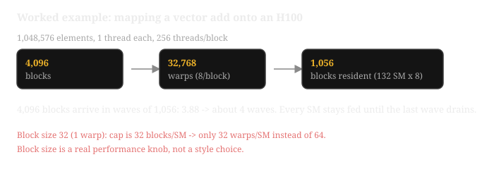
- Follow the arrows: elements to blocks to warps to resident blocks.
- Resident blocks (1,056) are the SMs' queue. Extra blocks wait for their turn, which is why you launch far more blocks than SMs.
- Takeaway: block size 32 hits the 32-blocks-per-SM cap and halves resident warps. Block size is a performance knob.
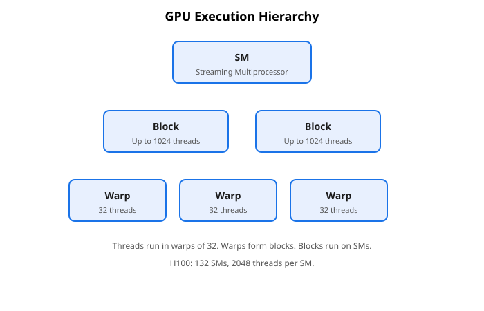
How to read this diagram
- Read top to bottom: SM, then blocks, then warps, then threads. Each level lives inside the one above it.
- SM: the streaming multiprocessor, the chip's workhorse. What it is: one of 132 independent processors on an H100. Why it exists: it runs blocks to completion without help from the CPU. What breaks: too few blocks per SM leaves execution units idle.
- Block: up to 1,024 threads on one SM. What it is: the unit the scheduler assigns. Why it exists: threads in a block share fast shared memory. What breaks: oversized blocks hit register or shared-memory caps and cut occupancy.
- Warp: 32 threads in lockstep. What it is: the hardware's real execution unit. Why it exists: the datapath is 32 lanes wide. What breaks: branch divergence serializes the warp (Figure 1.1).
Common misunderstanding
"The GPU runs all my threads at the same time." It does not. An H100 has 16,896 FP32 cores, but it can keep 270,336 threads in flight (132 SMs × 2,048). Most of those threads wait instead of computing: they wait for memory, for their warp's turn, or for a barrier. The GPU's trick is not to run everything at once. It is to keep so much work ready that there is always something to run.
Lab 1.1: Simulate warp lockstep on CPU
This lab shows why warp divergence costs cycles. No GPU needed.
# lab11_warp.py - a toy warp simulator. Run it with plain Python.
# WHAT it does: models one warp of 32 threads running a tiny program
# with an if/else. It counts "cycles" under two rules:
# (1) lockstep: both branches execute, masked threads idle
# (2) fantasy: each thread runs only its own branch (what CPUs do)
# WHY this matters: the gap between (1) and (2) IS the divergence cost.
def run_warp(branch_taken):
# branch_taken: list of 32 bools, one per thread.
# True -> thread takes the if-branch (cost: 4 cycles of work)
# False -> thread takes the else-branch (cost: 4 cycles of work)
n = len(branch_taken)
assert n == 32, "a warp is exactly 32 threads; change this and the model is wrong"
# Lockstep rule: the warp executes the if-branch for everyone,
# then the else-branch for everyone. Threads on the wrong side idle.
# Cost = cost(if) + cost(else) whenever BOTH sides are taken.
if_taken = any(branch_taken)
else_taken = any(not b for b in branch_taken)
lockstep_cycles = 4 * if_taken + 4 * else_taken
# Fantasy rule: every thread pays only for its own branch.
fantasy_cycles = 4 # each thread does 4 cycles of its own work
return lockstep_cycles, fantasy_cycles
# Case A: uniform branch. All 32 threads agree.
uni = [True] * 32
# Case B: divergent branch. 16 threads go each way (worst common case).
div = [True] * 16 + [False] * 16
for name, mask in [("uniform", uni), ("divergent", div)]:
real, fantasy = run_warp(mask)
print(f"{name:9s}: lockstep={real} cycles, per-thread={fantasy} cycles, "
f"waste={(real - fantasy) / real:.0%}")
# uniform -> lockstep=4 cycles, waste 0%
# divergent-> lockstep=8 cycles, waste 50%
# WHAT BREAKS if changed: set the branch costs unequal (e.g. 4 vs 12) and
# rerun. Divergence now costs 12+4=16 cycles for 4 cycles of useful work
# per thread. Long divergent branches are the expensive kind.
Try it: make only thread 0 diverge ( [False] + [True]*31 ). One diverging thread still forces the whole warp through both branches. That single thread costs 31 idle lanes.
Key takeaways
- The hierarchy is grid → block → warp (32 threads) → thread. Blocks go to SMs. Warps are what the SM actually schedules.
- An H100 SM holds up to 2,048 threads (64 warps) and has 4 warp schedulers that swap warps for free.
- Launch thousands of blocks, not dozens. Extra blocks are the queue that keeps SMs busy.
- A warp executes in lockstep. Divergent branches inside a warp serialize and burn idle cycles.
Next: Chapter 2 climbs the memory stack: registers, shared, L1, L2, HBM, and why moving data dominates everything.
Chapter 2. The memory hierarchy: registers, shared, L1, L2, HBM
Chapter 1 gave you the workers: millions of threads organized into warps and blocks. This chapter answers the next question: where do the numbers come from? The memory hierarchy decides whether a thread computes or waits, and it decides most of your performance.
A GPU thread can reach five kinds of memory, stacked by speed and size. The top four live in SRAM: static RAM built directly onto the chip, fast but small. HBM sits off chip: vast but slow. From fastest to slowest on an H100:
| Level | Size (H100) | Who controls it | Speed |
|---|---|---|---|
| Registers | 256 KB per SM (65,536 × 4 bytes), private per thread | Compiler | ~1 cycle |
| Shared memory | 228 KB per SM, shared inside a block | You, the programmer | ~20-30 cycles |
| L1 cache | Shares 256 KB SRAM with shared memory per SM | Hardware | ~30 cycles |
| L2 cache | 50 MB, shared by all SMs | Hardware | ~200 cycles |
| HBM (global memory) | 80 GB at 3.35 TB/s | You allocate it | ~400-800 cycles |
Registers hold one thread's private variables. Shared memory is a scratchpad. All threads in a block can read and write it, and it is the only fast way for threads to share data. L1 and L2 are automatic caches. HBM is the big slow pool where your tensors live. The B200 keeps the same stack with bigger numbers: 192 GB HBM at 8 TB/s and 126 MB L2.
Arithmetic is cheap, but moving data is not. An H100 can do 1,979 trillion operations per second in FP8 (an 8-bit floating-point format, covered fully in Chapter 6). It can only read 3.35 TB per second from HBM. That is roughly 591 operations per byte moved. If your kernel moves a byte and does one operation with it, the tensor cores (specialized units on each SM that run matrix multiply-adds) sit idle 99.8 percent of the time. Every fast kernel is a data-movement plan that keeps the fast small memories supplied from the slow big one.
Coalescing: how warps read HBM: global memory moves in chunks, not bytes. When a warp of 32 threads reads memory, the hardware groups the requests into 32-, 64-, or 128-byte segments. If thread t reads element t of a float32 array, the 32 threads touch bytes 0 to 127: exactly one 128-byte segment, one transaction, zero waste. If thread t reads element 32*t instead, each thread lands in a different 128-byte segment. The hardware issues 32 transactions of 128 bytes to deliver 128 useful bytes: 4,096 bytes moved, 32x waste. The rule is simple: neighbor threads touch neighbor addresses.
Shared memory banks: shared memory is split into 32 banks, each 4 bytes wide. Successive 4-byte words live in successive banks: word i sits in bank i mod 32. In one cycle the hardware can serve one request per bank. If the 32 threads of a warp hit 32 different banks, all 32 reads finish in one cycle. If several threads hit the same bank, those requests serialize: a 32-way bank conflict takes 32 cycles instead of 1. Thread t reading word t is perfect (banks 0-31), while thread t reading word 32*t is the worst case (all bank 0).
The L1/shared carve-out. The 256 KB of SRAM per SM is split between programmer-controlled shared memory and the automatic L1 cache. You choose the split at launch. A kernel that stages tiles (small rectangular chunks of data sized to fit on chip) in shared memory wants a big shared carve-out. A kernel with irregular access wants more L1.
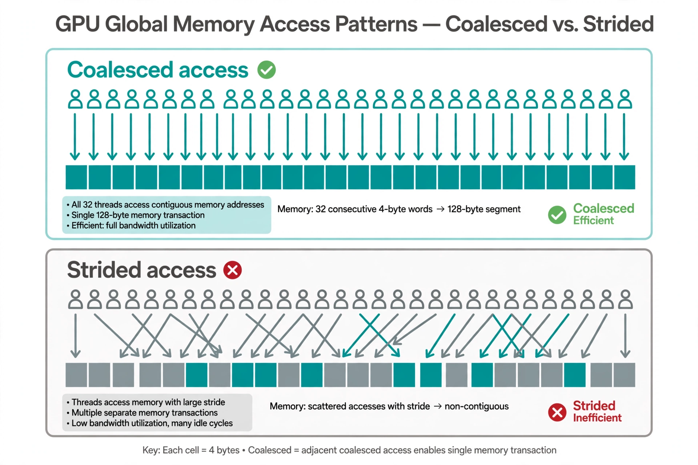
Figure 2.1. One warp, 32 threads, reading float32 values. Top: each thread reads the next element, so 32 requests merge into one 128-byte transaction. Bottom: each thread strides 32 elements, so the same 32 reads need 32 separate transactions and move 32x the data.
How to read this diagram
- Top row, thread order. Thread numbers run 0 to 31, left to right. In both panels the threads are identical. Only the addresses change.
- Top row, addresses. Thread
treads elementt. Bytes 0-127 are contiguous, so the hardware issues one 128-byte segment. All 128 bytes are useful. - Bottom row, addresses. Thread
treads element32*t. The touched bytes are 0, 128, 256, ... Each sits in its own 128-byte segment. The hardware issues 32 transactions. - The cost. Useful data is 128 bytes in both cases. Moved data is 128 bytes on top, 4,096 bytes below. Same code shape, 32x the traffic.
Figure 2.2. The H100 memory stack. Latency grows about 500x from registers to HBM while capacity grows about 300,000x. Fast kernels move data up this stack once and reuse it many times before it goes back down.
How to read this diagram
- Top to bottom is slow and big. Each step down multiplies latency and capacity. The register file is tiny and instant. HBM is vast and takes hundreds of cycles.
- The two boxes you control. The compiler assigns registers, but your code's variable count decides how many each thread needs. Shared memory is fully yours: you stage tiles there and decide the layout, which is where bank conflicts start.
- The two boxes the hardware controls. L1 and L2 are automatic. You cannot address them directly, but you benefit when your access pattern reuses data.
- The traffic rule. Data only moves between adjacent levels. A register can never read HBM directly. Every load climbs the whole stack, so a cache miss at every level is the slowest possible path.
Worked example: the true cost of a strided read
A kernel reads one float32 per thread. The warp has 32 threads.
Coalesced pattern: thread t reads element t.
Bytes touched: 32 × 4 = 128, contiguous and 128-byte aligned.
Transactions: 1 × 128 bytes.
Efficiency: 128 / 128 = 100 percent.
Strided pattern: thread t reads element 32*t.
Bytes touched: still 128 useful bytes, but spread across 32 segments.
Transactions: 32 × 128 bytes = 4,096 bytes moved.
Efficiency: 128 / 4,096 = 3.1 percent.
Worked: coalesced, 128 ÷ 128 = 100 percent. Strided, 128 ÷ 4,096 ≈ 3.1 percent: 96.9 percent of the HBM traffic is waste.
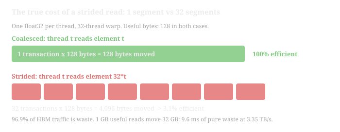
- Top row: one green bar, one transaction, everything used. Bottom row: many red segments, each moving 128 bytes to deliver 4.
- 96.9 percent of the HBM traffic is waste: 1 GB of useful reads moves 32 GB.
- Takeaway: the access pattern, not the arithmetic, decides the runtime. Fix the pattern first.
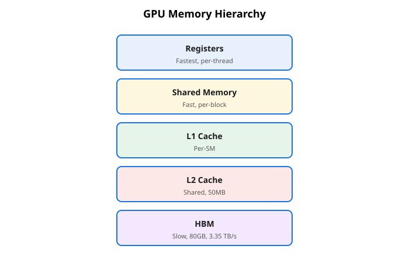
How to read this diagram
- Read top to bottom, fast to slow: registers are per-thread and instant, HBM is chip-wide and slow.
- Registers: per-thread private storage. What it is: the fastest memory, one set per thread. Why it exists: arithmetic needs operands with zero wait. What breaks: too many registers per thread caps occupancy (Chapter 3).
- Shared memory: per-block scratchpad. What it is: fast memory shared by all threads in a block. Why it exists: it lets threads cooperate without touching HBM. What breaks: bank conflicts serialize access.
- L1 and L2: caches. What they are: L1 is per-SM, L2 is the 50 MB chip-wide cache. Why they exist: they catch repeated reads automatically. What breaks: streaming access with no reuse wastes them.
- HBM: the big slow pool. What it is: 80 GB at 3.35 TB/s shared by all SMs. Why it exists: it holds the full dataset. What breaks: every unnecessary byte here costs hundreds of cycles.
Now scale it: a kernel reading 1 GB of useful data with that stride pattern actually moves 32 GB across the HBM bus. At 3.35 TB/s that is 9.6 ms of waste. Fix the pattern and the same kernel moves 1 GB in 0.3 ms. Nothing about the arithmetic changed.
Bank conflict arithmetic: thread t reads shared word 32*t + 1.
Word 32*t + 1 lives in bank (32*t + 1) mod 32 = 1 for every t.
All 32 threads hit bank 1: a 32-way conflict, 32 cycles.
Fix: read word t instead. Banks become t mod 32, all distinct, 1 cycle. A one-character-class fix worth 32x on that access.
Common misunderstanding
"Shared memory is just a faster global memory" is wrong: it is a different contract. Global memory is big, coherent, and slow, and every thread in the grid can see it. Shared memory is small, block-private, and fast, but you manage it by hand. You load tiles in, you synchronize the block, you compute, and you write results out. Forgetting the synchronization step is the classic bug, so treat the barrier as part of the pattern, not an option. Threads in a block do not arrive together, so reading a tile before every thread finished writing it reads garbage.
Lab 2.1: A memory-traffic calculator
Predict HBM traffic for an access pattern before running anything. CPU only.
# lab21_traffic.py - estimate HBM bytes moved for a warp's read pattern.
# WHAT it does: given 32 byte-addresses (one per thread), it groups them
# into 128-byte segments, the way the hardware does, and reports the
# number of transactions and the waste factor.
# WHY this matters: this is the exact arithmetic behind Figure 2.1.
# If you can predict the waste here, you can spot it in real kernels.
SEGMENT = 128 # hardware transaction size in bytes
def warp_traffic(addresses):
# addresses: 32 ints, the byte address each thread reads.
# Returns (transactions, useful_bytes, waste_factor).
assert len(addresses) == 32, "model one warp: exactly 32 threads"
segments = {a // SEGMENT for a in addresses}
moved = len(segments) * SEGMENT
useful = 32 * 4 # 32 threads x float32
return len(segments), moved, moved / useful
# Pattern 1: coalesced. Thread t reads float t (bytes 4t .. 4t+3).
coalesced = [4 * t for t in range(32)]
# Pattern 2: strided. Thread t reads float 32*t.
strided = [4 * 32 * t for t in range(32)]
for name, pat in [("coalesced", coalesced), ("strided", strided)]:
n, moved, waste = warp_traffic(pat)
print(f"{name:9s}: {n:2d} transactions, {moved:5d} bytes moved, "
f"waste {waste:.1f}x")
# coalesced: 1 transactions, 128 bytes moved, waste 1.0x
# strided : 32 transactions, 4096 bytes moved, waste 32.0x
# WHAT BREAKS if changed: set SEGMENT = 32. The strided pattern now needs
# 32 transactions of 32 bytes = 1024 bytes, waste 8x. Real hardware uses
# 128-byte segments for full warps, so 32 is the wrong model. The segment
# size is not a tuning knob; it is a hardware fact you must match.
Next, extend it: model bank conflicts the same way. Map each thread's shared-memory word index w to bank w % 32, count the largest group sharing a bank, and report the serialization factor. The strided pattern above gives 32.
Key takeaways
- Five levels: registers, shared, L1, L2, HBM. You control the first two. Traffic only flows between neighbors.
- Coalescing rule: neighbor threads touch neighbor addresses, or you pay up to 32x in wasted HBM traffic.
- Bank rule: shared word
ilives in banki mod 32. One bank per thread per cycle, or accesses serialize. - Shared memory needs a block-wide barrier between "load the tile" and "use the tile". The barrier is part of the pattern.
Next: Chapter 3 turns the memory hierarchy into a scheduling strategy: occupancy and latency hiding.
Chapter 3. Occupancy and latency hiding
Chapter 2 showed that memory is hundreds of cycles slower than registers. The GPU answers not with faster memory but with more threads: while one warp waits on a load, others compute. This chapter quantifies that answer: occupancy, and how it hides latency.
Occupancy is the fraction of an SM's warp slots that hold live warps. An H100 SM can host 64 warps. If your kernel keeps 32 warps resident on each SM, occupancy is 50 percent. It is a capacity number, not a speed number, and it matters for one reason: the GPU hides memory latency by swapping warps.
An HBM read takes ~500 cycles. A warp that issues a load and then waits wastes 500 cycles doing nothing. Instead the warp scheduler parks that warp and runs a different one instantly. Swapping warps costs zero cycles: every warp's registers stay live on the SM, so the scheduler just picks another program counter. With enough warps ready, the SM always has work while loads are in flight. That is latency hiding, and occupancy makes it possible.
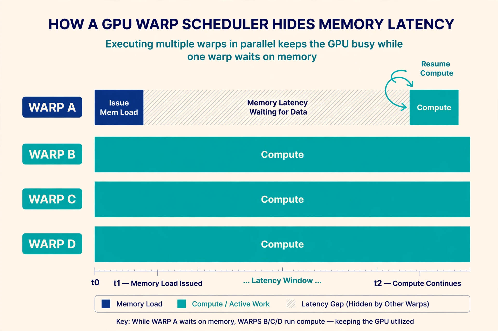
- Rows: each row is one warp resident on the same SM.
- Warp A (top row). Issues a memory load, then waits. The hatched gap is the slow HBM read.
- Warps B, C, D. Compute straight through the gap. Their work covers Warp A's stall.
- The loop arrow. When the data arrives, Warp A resumes computing where it left off.
- The point. Swapping warps costs zero cycles because every warp's registers stay live on the SM. Occupancy is the count of warps available to swap in.
Chapter 1 showed the SM's raw parallelism. Chapter 2 showed that memory is 500x slower than registers. Put them together and you get a paradox: the fastest chip available spends most of its time waiting for data. The architects' answer was not faster memory. It was more threads than execution units, so there is always another warp ready to compute while one waits. Occupancy measures whether you gave the scheduler enough warps.
Three resources cap how many warps fit on an SM:
- Registers. 65,536 32-bit registers per SM, shared by all resident threads. A kernel using 64 registers per thread with 1,024-thread blocks needs 65,536 registers per block. Exactly 1 block fits: 32 warps, 50 percent occupancy. Drop to 32 registers per thread and 2 blocks fit: 64 warps, 100 percent. Register count is the most common occupancy limiter, and it is set by your code's variable pressure.
- Shared memory. 228 KB per SM. A block using 96 KB of shared memory allows 2 blocks per SM. Big tiles improve reuse but cost occupancy. This is the central trade of kernel design.
- Thread and block caps. 2,048 threads and 32 blocks per SM, hard ceilings. A 64-thread block can never pass 32 × 64 = 2,048 threads. That is fine. But a 32-thread block caps at 32 × 32 = 1,024 threads: 50 percent occupancy no matter what. Tiny blocks waste warp slots.
The scheduler needs enough ready warps to cover the latency of the slowest operation. A useful rule on Hopper (the H100's architecture generation): 4+ warps per scheduler (16+ per SM, about 25 percent occupancy) often hides arithmetic latency, but hiding full HBM latency needs far more. When a profiler reports low occupancy and high memory stalls, raising occupancy is usually the fix. When occupancy is high and the kernel is still slow, the bottleneck is elsewhere: Chapter 4.
Time →
Warp 0: [LOAD........waiting........][MATH][MATH]
Warp 1: [LOAD........waiting........][MATH]
Warp 2: [LOAD.....waiting.....][MATH]
Warp 3: [LOAD...waiting..][MATH]
SM busy: ████████████████████████████████████████ (always some warp computing)
With 1 warp per SM:
Warp 0: [LOAD........waiting........][MATH]
SM busy: ████░░░░░░░░░░░░░░░░░░░░░░░░░░████░░░░░░ (mostly idle)
Figure 3.1. Four warps hide one load's latency. One warp cannot. Each warp's 500-cycle wait overlaps another warp's math. The SM stays busy only if the scheduler always has another warp ready.
How to read this diagram
- Read the top half left to right. Warp 0 issues a load, then waits ~500 cycles. Instead of idling, the scheduler runs warp 1's math, then warp 2's, then warp 3's.
- Watch the bottom "SM busy" bar. The bar never shows a gap, because whenever one warp waits, another computes. Warp swaps hide the latency. They do not reduce it: every load still takes 500 cycles.
- Read the bottom half. With a single resident warp, no other warp can cover the wait. The SM idles through every load. Same code, same hardware, far less throughput.
- The takeaway in one line: occupancy does not make any thread faster. It gives the scheduler other warps to run while one warp waits.
Worked example: three limits, one occupancy number
A kernel launches 256-thread blocks. Each thread uses 48 registers. Each block uses 48 KB of shared memory. H100 limits: 65,536 registers, 228 KB shared, 2,048 threads per SM.
- Register limit: 65,536 / (256 × 48) = 5.33, so 5 blocks. That is 5 × 8 = 40 warps.
- Shared memory limit: 228 / 48 = 4.75, so 4 blocks. That is 4 × 8 = 32 warps.
- Thread limit: 2,048 / 256 = 8 blocks. Not binding.
Shared memory binds first: 4 blocks, 32 warps, 32/64 = 50 percent occupancy.
Now shrink the tile to 32 KB of shared per block. Shared memory allows 228 / 32 = 7.1, so 7 blocks, but registers still cap at 5 blocks. New occupancy: 40 warps = 62.5 percent. The shared-memory cut gained 12.5 points of occupancy. Whether that helps depends on whether the smaller tile still reuses data well: the classic trade-off.
Push further: could this kernel ever reach 100 percent? Registers cap it at 5 blocks (40 warps). To hit 64 warps it needs 8 blocks of 256 threads, which needs ≤ 32 registers per thread (65,536 / 2,048). If the compiler uses fewer than 32 registers per thread, shared memory at 32 KB allows 7 blocks and threads allow 8. That gives 7 blocks = 56 warps = 87.5 percent. The math tells you exactly which knob to turn.
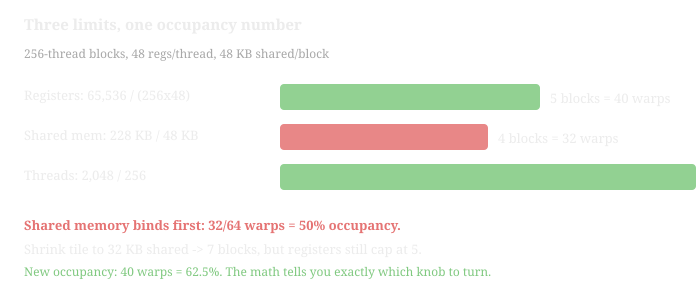
- Each bar is a hardware cap applied to the same block config. The red bar is the binding one.
- Shrinking the shared-memory tile to 32 KB lifts its bar to 7 blocks, but registers still cap at 5: 62.5 percent.
- Takeaway: occupancy is arithmetic on the three limits. The math tells you exactly which knob to turn.
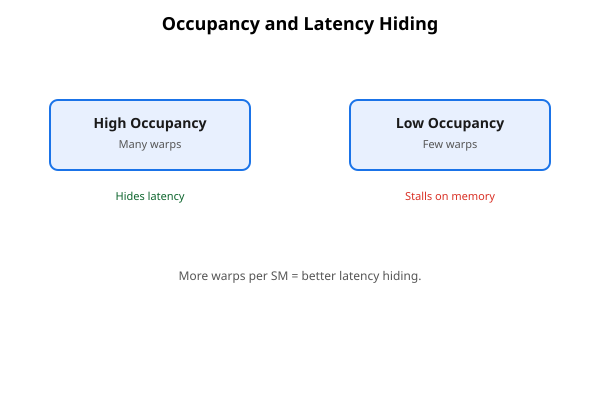
How to read this diagram
- Compare the two panels: many warps on the left hide the gaps, few warps on the right stall.
- High occupancy: many resident warps. What it is: a large pool of warps per SM. Why it matters: the scheduler swaps a waiting warp for a ready one at zero cost. What breaks it: register, shared-memory, or thread caps shrink the pool (Figure 3.2).
- Low occupancy: few resident warps. What it is: a small pool with no backup work. Why it hurts: a memory wait idles the whole SM. What breaks it: oversized blocks or heavy per-thread state.
Common misunderstanding
"Maximize occupancy and the kernel will be fast" is wrong. Occupancy is a ceiling on latency hiding, not a performance score. A kernel at 100 percent occupancy doing wasteful strided reads (Chapter 2) still moves 32x the data. A kernel at 25 percent occupancy that is compute-bound (limited by arithmetic speed rather than memory traffic, a distinction Chapter 4 makes precise) on tensor cores can still run near peak. Arithmetic has short latency and needs little hiding. Raise occupancy when the profiler shows memory stalls with idle warp slots, but not otherwise: otherwise you optimize a number, not the kernel.
Lab 3.1: Occupancy calculator
Compute occupancy from resource usage, like the worked example. CPU only.
# lab31_occupancy.py - H100 occupancy from three resource limits.
# WHAT it does: for a given block config, applies each hardware cap and
# reports the binding limit and the resulting occupancy.
# WHY this matters: it turns "try a bigger block" into arithmetic you can
# do before compiling anything.
# H100 (SXM) per-SM hardware caps. These are silicon facts, not tunables.
REGS_PER_SM = 65536 # 32-bit registers
SMEM_PER_SM_KB = 228 # KB of shared memory
THREADS_PER_SM = 2048 # = 64 warps
BLOCKS_PER_SM = 32 # hard cap on resident blocks
WARPS_PER_SM = 64
def occupancy(threads_per_block, regs_per_thread, smem_per_block_kb):
# All three limits, in units of blocks. Floor each: a partial block
# cannot launch, so fractional blocks are wasted capacity.
by_regs = REGS_PER_SM // (threads_per_block * regs_per_thread)
by_smem = SMEM_PER_SM_KB // smem_per_block_kb
by_threads = THREADS_PER_SM // threads_per_block
by_blocks = BLOCKS_PER_SM
blocks = min(by_regs, by_smem, by_threads, by_blocks)
warps = blocks * (threads_per_block // 32)
occ = warps / WARPS_PER_SM
limits = {"registers": by_regs, "shared_mem": by_smem,
"threads": by_threads, "blocks": by_blocks}
binding = min(limits, key=limits.get) # the smallest cap binds first
return {"blocks": blocks, "warps": warps, "occupancy": occ,
"binding_limit": binding, "all_limits": limits}
# The worked example: 256 threads, 48 regs/thread, 48 KB shared.
r = occupancy(256, 48, 48)
print(r)
# blocks=4, warps=32, occupancy=0.5, binding_limit='shared_mem'
# WHAT BREAKS if changed: pass smem_per_block_kb=0 and watch the
# ZeroDivisionError. A kernel that uses no shared memory is limited by
# the other caps; model that as a very large number, not zero, or guard
# the division. Hardware limits are floors and ceilings, never zeros.
Experiment: fix 256 threads and 32 KB shared, then sweep registers per thread over 24, 32, 40, 48, 64. Plot occupancy. You will see it fall in steps, not smoothly, because blocks are indivisible.
Key takeaways
- Occupancy = resident warps / 64 per SM. It enables latency hiding: free warp swaps cover 500-cycle HBM waits.
- Three caps bind it: registers (65,536/SM), shared memory (228 KB/SM), threads (2,048/SM). Compute all three. The smallest wins.
- Small blocks (≤ 64 threads) can cap occupancy through the 32-blocks-per-SM ceiling.
- High occupancy is necessary for memory-bound kernels and irrelevant for compute-bound ones. Check the bottleneck first.
Next: Chapter 4 gives you the diagnostic method: the roofline and the ordered suspect list.
Chapter 4. Performance diagnosis: the roofline and the suspect list
Chapters 1 through 3 gave you three levers: how the hardware schedules work, how data moves, and how many warps hide the waits. This chapter turns those levers into a method. Given a slow kernel, you will work an ordered suspect list instead of guessing.
The roofline model is a two-line chart that classifies your kernel's slowness. The x-axis is arithmetic intensity: FLOPs (floating-point operations) done per byte moved. The y-axis is achieved performance in FLOPS (operations per second). Two roofs cap it: the slanted memory roof (bandwidth × intensity) and the flat compute roof (peak FLOPS). Your kernel lives under the lower of the two. Where it sits decides everything about how you fix it.
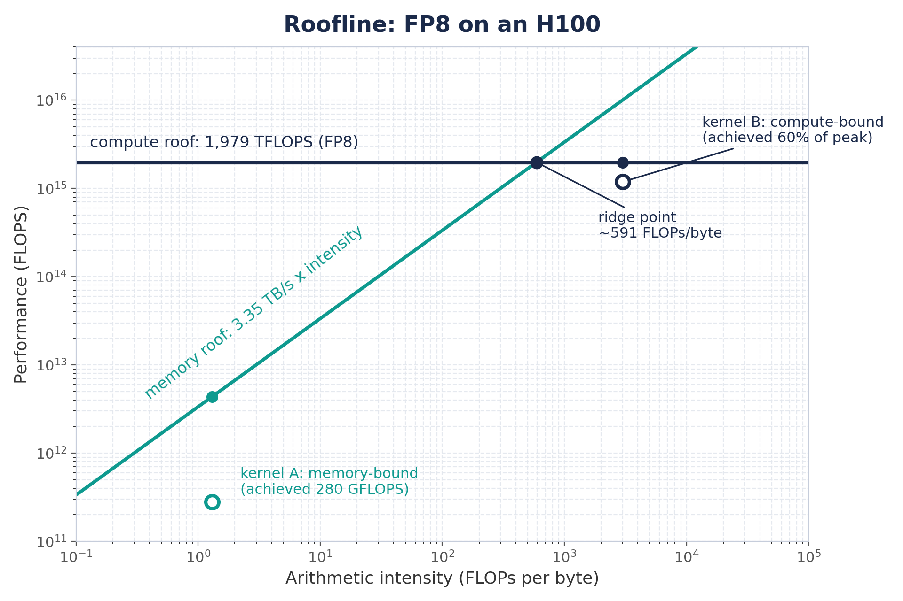
Figure 4.1. The roofline for FP8 on an H100. Left of the ridge point, bandwidth caps you. Right of it, tensor cores cap you. Your first job with any slow kernel is to find which side it is on.
How to read this diagram
- The two roofs. The diagonal line is the memory roof: performance = 3.35 TB/s × intensity. The flat line is the compute roof: 1,979 TFLOPS (trillion floating-point operations per second) for FP8. A kernel can never rise above either.
- The ridge point. Where the roofs meet. For H100 FP8: 1,979e12 / 3.35e12 ≈ 591 FLOPs per byte. Below 591 you are memory-bound by physics, not by skill. No kernel with intensity 10 can beat 33.5 TFLOPS here.
- The two dots. The memory-bound dot sits on the diagonal: its limit is bytes, so the fix is to move fewer bytes. The compute-bound dot sits on the flat roof: its limit is math, so the fix is better tensor-core use or less math.
- How to read your own kernel. Compute its intensity (FLOPs / bytes), find it on the x-axis, and look up. The gap between the dot and the roof above it is your headroom. The side of the ridge it sits on names your suspects.
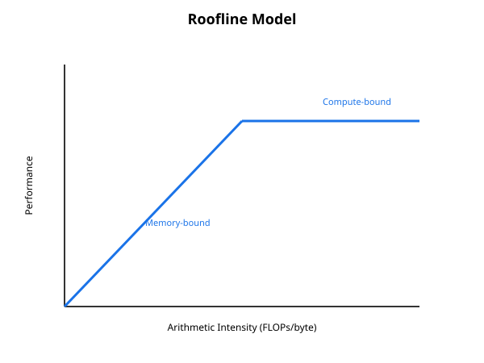
How to read this diagram
- Find your kernel's intensity on the x-axis, then read up to the lower roof. That roof is your speed limit.
- Memory-bound (left of the ridge): the diagonal roof. What it is: performance capped by 3.35 TB/s times intensity. Why it matters: no math trick helps here. What breaks the fix: optimizing arithmetic instead of the access pattern.
- Compute-bound (right of the ridge): the flat roof. What it is: performance capped by the tensor cores. Why it matters: fusion and lower precision are the levers. What breaks the fix: moving fewer bytes when the math is the limit.
- The ridge: where the roofs meet. What it is: the intensity where both limits agree, about 591 FLOPs/byte for FP8. Why it matters: it tells you which side you are on. What breaks: guessing the side without computing intensity.
Without the roofline, kernel optimization is guesswork. People raise occupancy on compute-bound kernels, or fuse arithmetic into memory-bound ones and wonder why nothing moves. The roofline replaces guessing with a number. Intensity, measured or computed, places the kernel on the chart, and the chart hands you an ordered suspect list. Diagnose first, then change code.
Given a slow kernel, work the suspects in this order. Each has a confirmation test: a measurement or a calculation that confirms the diagnosis before you change code.
Suspect 1: memory-bound by intensity. Compute FLOPs and bytes. If intensity sits left of the ridge, the kernel cannot beat bandwidth × intensity. Confirmation: measure achieved HBM bandwidth (bytes moved / time). If it is near the 3.35 TB/s peak, the kernel is already optimal for its intensity. The only fix is algorithmic: move fewer bytes (fusion, better caching, lower precision).
Suspect 2: uncoalesced or strided access. The kernel moves far more bytes than the math needs. Confirmation: bytes moved far above what the tensor sizes suggest. A vector kernel touching 4 GB to process 1 GB of data has a 4x waste pattern. Fix the pattern (Chapter 2) before anything else.
Suspect 3: low occupancy with memory stalls. Many warp slots sit empty while loads wait. Confirmation: occupancy well under 50 percent while the kernel is left of the ridge. Fix per Chapter 3: cut registers, shrink shared tiles, grow blocks.
Suspect 4: bank conflicts in shared memory. The kernel stages tiles but serializes on banks. Confirmation: shared-memory throughput far below peak with high shared usage. Or compute the access pattern by hand as in Chapter 2. Fix the layout: pad or permute indices.
Suspect 5: warp divergence. Branches split warps on the hot path. Confirmation: instruction count far above what the arithmetic suggests, with data-dependent branches inside. Fix: restructure so warps decide uniformly, or hoist the branch out of the loop.
Suspect 6: launch overhead and tiny problems. The kernel does microseconds of work. Confirmation: total runtime barely changes when the problem size grows 10x. The timeline shows gaps between short kernels. Fix: fuse kernels (Chapter 7), batch work, or use CUDA graphs (recorded launch sequences replayed as one unit) to collapse launches. Small kernels are latency-bound, and the roofline does not model latency: it assumes large problems.
Suspect 7: wrong precision for the hardware. FP32 arithmetic on tensor-core-shaped math. Confirmation: the kernel is right of the ridge but far under the compute roof. Fix: move the math to tensor cores (TF32, a 19-bit format with FP32's range, BF16, 16-bit brain float, the standard training format, or FP8) or restructure into matrix-multiply-shaped work.
Figure 4.2. The diagnosis flowchart. Intensity first, always. It splits every case into "move fewer bytes" and "do math better", and each branch orders its suspects by how often they cause the slowdown.
How to read this diagram
- Start at intensity. One number splits every case. Do not profile first. Compute FLOPs over bytes from the algorithm.
- Left branch: memory-bound. Check bandwidth first: near peak means the code is fine and the algorithm must change. Below peak means the code wastes traffic: check the access pattern, then occupancy, then banks and divergence, in that order.
- Right branch: compute-bound. Compare against the tensor-core roof for your precision. Near it means the math itself must shrink. Far below it means you are not on tensor cores yet.
- The exception. If the problem is tiny, none of this applies. The roofline assumes big problems. Small ones are latency-bound and want fusion or batching.
Worked example: two kernels, two verdicts
Kernel A: FP32 vector add, z = x + y, 1,048,576 elements. FLOPs = 1 per element (one add). Bytes = 3 arrays × 4 bytes = 12 per element. Far left of the ridge (591).
If the kernel moves ~12.6 MB in ~45 µs of measured runtime, bandwidth = 12.6 MB / 45 µs ≈ 280 GB/s. That is only 8 percent of peak. Verdict: suspect 2 or 3. Check the access pattern first.
Kernel B: FP8 GEMM (general matrix multiply), 4096×4096×4096. FLOPs = 2 × 4096³ ≈ 1.37e11. Bytes = 3 matrices × 4096² × 1 byte ≈ 5.03e7. Right of the ridge.
Verdict: compute-bound, suspect 7 if it is far under the roof. Check it is actually issuing tensor-core instructions in FP8.
Same chart, opposite fixes. That is the whole point.
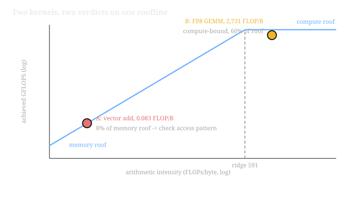
- The dashed line is the ridge at 591 FLOPs/byte: left of it, bandwidth decides. Right of it, arithmetic decides.
- Point A under the memory roof means the fix is the access pattern, not the math. Point B under the compute roof means you check tensor-core issue.
- Takeaway: the same chart gives opposite fixes. Intensity tells you what the work is worth.
Common misunderstanding
"The profiler says SM utilization is 90 percent, so the kernel is fine." SM utilization counts warps with work to do, not useful work done. A kernel doing 32x-wasted strided reads can show high utilization: every warp is "busy" issuing wasted loads. Utilization without the roofline is a vanity metric. Intensity tells you what the work is worth. Utilization tells you the SM was awake. You need both.
Lab 4.1: Roofline classifier
Classify kernels from FLOP and byte counts. CPU only.
# lab41_roofline.py - place a kernel on the H100 FP8 roofline.
# WHAT it does: from FLOPs and bytes it computes intensity, the ridge
# point, the predicted ceiling, and which suspect list to open.
# WHY this matters: this is Figure 4.2's first two boxes, as a function
# you can call on any kernel before profiling it.
# H100 SXM hardware roofs (silicon facts).
PEAK_BW = 3.35e12 # bytes/second of HBM bandwidth
PEAK_FP8 = 1979e12 # FP8 tensor-core FLOPS
def diagnose(flops, nbytes, measured_seconds=None):
# flops: total floating-point ops. nbytes: total HBM bytes moved.
# measured_seconds: wall time, if you have it (optional).
intensity = flops / nbytes
ridge = PEAK_FP8 / PEAK_BW
ceiling = min(PEAK_BW * intensity, PEAK_FP8) # the lower roof wins
side = "memory-bound" if intensity < ridge else "compute-bound"
out = {
"intensity": intensity,
"ridge_point": ridge,
"side": side,
"predicted_ceiling_flops": ceiling,
}
if measured_seconds:
achieved = flops / measured_seconds
out["achieved_flops"] = achieved
out["fraction_of_ceiling"] = achieved / ceiling
# Fraction near 1.0 -> optimal for its intensity; fix the algorithm.
# Fraction far below 1.0 -> a suspect from the chapter is guilty.
return out
# Kernel A: fp32 vector add, 2^20 elements.
a = diagnose(flops=2**20, nbytes=3 * 4 * 2**20, measured_seconds=45e-6)
print("kernel A:", a["side"], "ceiling %.1f GFLOPS" % (a["predicted_ceiling_flops"] / 1e9),
"achieved %.1f%%" % (100 * a["fraction_of_ceiling"]))
# memory-bound, ceiling ~279 GFLOPS, achieved ~8% -> suspect 2 or 3
# Kernel B: fp8 GEMM 4096^3 at 115 us.
b = diagnose(flops=2 * 4096**3, nbytes=3 * 4096**2 * 1, measured_seconds=115e-6)
print("kernel B:", b["side"], "ceiling %.0f TFLOPS" % (b["predicted_ceiling_flops"] / 1e12),
"achieved %.0f%%" % (100 * b["fraction_of_ceiling"]))
# compute-bound, ceiling 1979 TFLOPS, achieved ~60% -> suspect 7 territory
# WHAT BREAKS if changed: pass nbytes as elements instead of bytes
# (forget the x4 for fp32). Intensity inflates 4x and a memory-bound
# kernel looks compute-bound. Units are the diagnosis: FLOPs per BYTE.
Try it on a softmax over 4,096 rows of 4,096 fp16. FLOPs are about 5 × 16.8M ≈ 84M (max, sub, exp, sum, div per element). Bytes are 8 × 16.8M × 2 = 268 MB (five passes: max reads, subtract and exp and divide each read and write, sum reads: 5 reads + 3 writes). Intensity ≈ 0.31, deeply memory-bound: this is exactly why Chapter 5 fuses it.
Key takeaways
- The roofline's two roofs are bandwidth × intensity and peak FLOPS. Intensity = FLOPs / byte places every kernel.
- H100 FP8 ridge point ≈ 591 FLOPs/byte. Left: move fewer bytes. Right: do math better.
- Work suspects in order: bandwidth vs peak, access pattern, occupancy, banks, divergence, launch overhead, precision.
- Utilization without intensity is vanity. A busy SM doing wasted loads is still slow.
Next: Chapter 5 puts the method to work: writing a fused softmax in Triton.
Chapter 5. Writing a Triton kernel from scratch: fused softmax
Chapters 1 through 4 were theory: scheduling, memory, occupancy, diagnosis. Now you write a kernel. Triton lets you express the performance-critical decisions in about thirty lines of Python. The fused softmax is the canonical first kernel: one HBM round trip per row instead of five.
Triton is a Python-embedded language for writing GPU kernels. You write a Python function, mark it @triton.jit, and describe the work at the tile level: load a tile, compute on it, store it back. The Triton compiler turns that into real GPU machine code. It is the tool this volume uses for all kernel code, and torch.compile generates it too (Chapter 7).
Our kernel computes softmax over each row of a matrix, fused into one pass. (Softmax turns raw scores into probabilities that sum to 1.) The kernel reads each row from HBM once, does all the math on chip, and writes the row back once. Lab 4.1 showed naive softmax has intensity ~0.31 and does five HBM round trips per row (max, subtract, exp, sum, divide). The fused kernel does one round trip. Same math, one quarter the traffic.
Writing this in CUDA C++ means managing threads, shared memory, barriers, and warp-level primitives by hand. That is hundreds of lines where one wrong index corrupts memory silently. Triton keeps the performance-critical decisions (tiling, masking, parallelism) and lets the compiler handle the rest. A fused softmax is about 30 lines. You will read every one of them below.
A Triton program launches a grid of program instances, each a thread block. Inside, you never name a thread. You name tiles: tl.arange(0, BLOCK) builds a vector of indices, tl.load moves the whole tile at once, and arithmetic applies to the whole tile. The compiler maps tiles to threads, warps, and memory instructions. Marker tl.constexpr flags values the compiler must know at compile time (tile sizes), so it can unroll loops and size registers. Function tl.program_id(0) tells each instance which piece of the grid it owns.
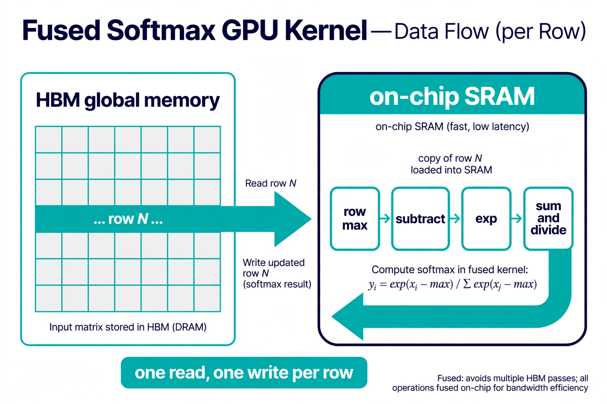
Figure 5.1. The fused softmax data path. One row travels from HBM to on-chip SRAM once, every softmax step happens in registers, and the finished row travels back once. Eager PyTorch would send the row across the bus five times.
How to read this diagram
- Left: the matrix in HBM. The diagram highlights one row. In this kernel, one program instance owns one full row. The grid has as many instances as rows.
- The wide arrow to SRAM. The instance loads its entire row into on-chip memory in one vectorized read. Masked-out lanes (past the row end) load as negative infinity.
- The four boxes on chip. Row max, subtract, exp, then sum and divide. Every value stays in registers between boxes. Nothing returns to HBM mid-row.
- The wide arrow back. One vectorized write stores the finished probabilities. Total HBM traffic per row: one read, one write. The eager version pays five round trips for the same math.
The kernel, line by line
import torch
import triton
import triton.language as tl
@triton.jit
def softmax_kernel(
x_ptr, # pointer to the input matrix in HBM
out_ptr, # pointer to the output matrix in HBM
n_cols, # columns per row; a runtime value, not a constant
stride_row, # elements between the starts of consecutive rows
BLOCK: tl.constexpr, # tile width. Compile-time constant so the compiler
# can unroll loops and fix register allocation.
):
# One program instance (one thread block) owns exactly one row.
# program_id(0) is this instance's index along grid axis 0.
row = tl.program_id(0)
# Column indices 0 .. BLOCK-1 for this row's tile, as a vector.
# You never write a loop over threads; the tile IS the parallelism.
cols = tl.arange(0, BLOCK)
# Rows shorter than BLOCK would read out of bounds. The mask
# disables those lanes on every load and store below.
mask = cols < n_cols
# Load the whole row in one vectorized read. Pointer arithmetic on
# x_ptr is in ELEMENTS, not bytes; Triton scales by dtype size.
# other=-inf: masked lanes must not change the answer. exp(-inf)=0
# adds nothing to the sum, and -inf never wins the max. Filling
# with 0.0 instead would corrupt both. This one argument is the
# most common correctness bug in masked kernels.
x = tl.load(x_ptr + row * stride_row + cols, mask=mask,
other=float("-inf"))
# Numerically stable softmax: subtract the row max BEFORE exp, so
# the largest exponent is exp(0) = 1. Skip this and inputs above
# ~88 overflow fp32 exp to inf, producing NaNs downstream.
row_max = tl.max(x, axis=0)
x = x - row_max
num = tl.exp(x)
den = tl.sum(num, axis=0)
out = num / den
# Write the finished row back with the same mask. Dropping the mask
# here writes past the row end and silently corrupts the next row.
tl.store(out_ptr + row * stride_row + cols, out, mask=mask)
How to read this diagram
- The signature. Pointers plus shapes, like C, but
BLOCK: tl.constexpris special. The compiler fixes its value when it compiles the code. Two different BLOCK values compile two different kernels. row = tl.program_id(0). This is the only "which work is mine" logic. The launcher (below) creates one instance per row, so the row index follows directly.tl.arange+ mask. The tile of indices plus a boolean guard. Every memory op in the kernel carries the mask, which is how Triton handles sizes that are not multiples of the tile.- The load. One line moves up to BLOCK elements from HBM to registers. The
otherfill value is a correctness decision, not a formality. - The math. Five lines, all on registers.
axis=0reduces across the tile. This is the entire softmax, and it never touches HBM mid-row. - The store. One line writes back. The kernel's HBM cost: one read, one write.
The host-side launcher is ordinary Python. It runs on CPU and only enqueues GPU work.
def softmax(x: torch.Tensor) -> torch.Tensor:
# Host launcher: pure Python, runs on CPU, needs a CUDA device only
# for the tensors it passes in. All the GPU work is the kernel above.
assert x.is_cuda and x.is_contiguous()
# WHY contiguous: the kernel does row_ptr + col_offsets arithmetic,
# which assumes rows are packed. A transposed view would need its
# real strides passed in; asserting here turns silent wrong answers
# into a loud immediate error.
n_rows, n_cols = x.shape
out = torch.empty_like(x)
# BLOCK must be a power of two: tl.arange needs a static tile shape
# and the compiler vectorizes power-of-two tiles cleanly.
BLOCK = triton.next_power_of_2(n_cols)
# num_warps trades intra-row parallelism against idle lanes.
# Short rows (small BLOCK) want few warps; long rows want more.
# 4 is a safe default up to 1024-wide tiles.
num_warps = 4 if BLOCK <= 1024 else 8
# Grid: one program instance per row. program_id(0) in the kernel
# reads the instance's position in this 1-D grid.
grid = (n_rows,)
softmax_kernel[grid](x, out, n_cols, x.stride(0),
BLOCK=BLOCK, num_warps=num_warps)
return out
Worked example: one row by hand
Row [1.0, 2.0, 3.0], BLOCK=4 (next power of two ≥ 3), so the mask drops lane 3.
- Load:
[1.0, 2.0, 3.0, -inf](masked lane fills with -inf). row_max = 3.0. The -inf lane cannot win the max. Correct.- Subtract:
[-2.0, -1.0, 0.0, -inf]. - Exp:
[0.1353, 0.3679, 1.0, 0.0]. The masked lane contributes exactly 0. - Sum: 1.5032. Divide:
[0.0900, 0.2447, 0.6652, 0.0]. - Store writes 3 lanes (mask drops lane 3). The stored row sums to 1.0.
Now the failure mode: same row, without max-subtraction, inputs shifted by +100. exp(103) overflows fp32 to inf, sum is inf, output is NaN. The five-line stable form exists because the naive three-line form breaks on real data.
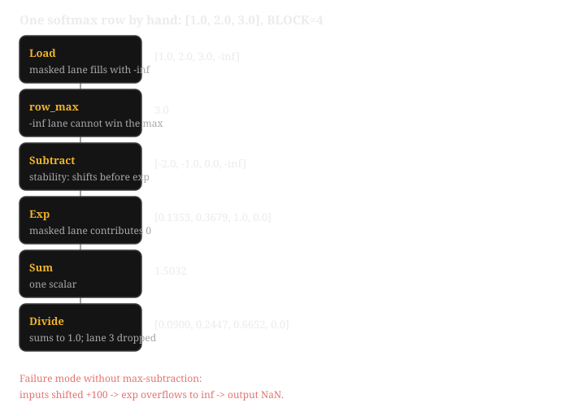
- Read top to bottom: each stage shows the register contents after that line of the kernel.
- The -inf masked lane can never win the max and contributes 0 after exp: masking by -inf is what makes it work.
- Takeaway: without max-subtraction, inputs shifted by +100 overflow to inf and the output is NaN. The five-line stable form exists because the naive three-line form breaks.
The extension: online softmax for long rows
One tile per row works while the row fits in registers. For rows longer than a tile (long-context attention: each token looks back at thousands of earlier tokens), loop over tiles and keep a running max and sum, rescaling as the max grows. This is the same online softmax FlashAttention uses to avoid materializing the full attention matrix.
def online_softmax_update(m_old, l_old, tile):
# Merge one tile into running softmax statistics.
# m_old: max of all tiles seen so far. l_old: their rescaled sum.
# Returns (m_new, l_new) covering old tiles + this tile.
# WHY rescale: exp was computed against the OLD max. When a new
# larger max appears, old exps must be re-based: exp(x - m_new)
# = exp(x - m_old) * exp(m_old - m_new). The running sum scales
# by that factor instead of being recomputed. One pass, no re-read.
import numpy as np
tile_max = tile.max()
m_new = max(m_old, tile_max)
# Old sum, re-based to the new max, plus this tile's sum re-based.
l_new = (l_old * np.exp(m_old - m_new)
+ np.exp(tile - m_new).sum())
return m_new, l_new
# WHAT BREAKS if you skip the rescaling: the sums from different
# tiles used different bases and no longer add up. The final
# division then produces rows that do not sum to 1.
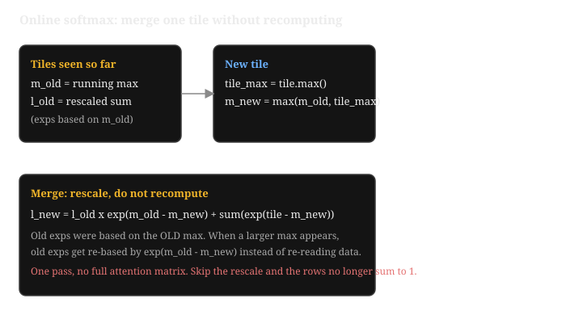
exp(m_old - m_new) instead of recomputing. One pass, no full attention matrix: the same trick FlashAttention uses.- Top: the running statistics meet the new tile.
m_newis the max of both. - The merge formula re-bases the old exps to the new max with one multiply: no data is re-read.
- Takeaway: skip the rescale and the tiles use different bases, so the final rows no longer sum to 1.
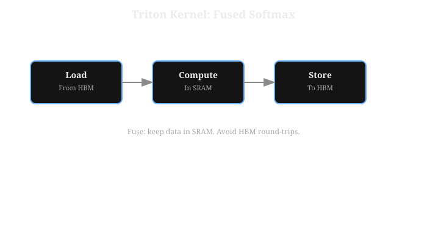
How to read this diagram
- Follow the arrows left to right. Data enters from HBM once and leaves to HBM once. Everything between stays in SRAM.
- Load: one read from HBM. What it is: the row moves into SRAM a single time. Why it matters: HBM reads are the slow step. What breaks: reloading the row for every pass, as the naive version does.
- Compute: max, exp, sum, divide in SRAM. What it is: all five softmax stages on resident data. Why it matters: SRAM is orders of magnitude faster than HBM. What breaks: spilling intermediate rows back to HBM between stages.
- Store: one write to HBM. What it is: the finished row writes out once. Why it matters: the write is the only HBM traffic besides the load. What breaks: writing partial results per stage.
Common misunderstanding
"Triton is Python, so the kernel runs in Python and must be slow." No. @triton.jit compiles the function at first launch into GPU machine code (via PTX, NVIDIA's intermediate assembly). Python runs once, at launch time, to enqueue the work. Per element, zero Python executes. The cost: the kernel cannot run without a GPU. The lab below separates the two concerns. It validates the algorithm (masking, -inf fill, max-subtraction) in NumPy on CPU, so the lab proves the math before you need a GPU.
Lab 5.1: Verify the fused-softmax algorithm on CPU
Port the kernel's algorithm to NumPy, including the mask and the -inf fill, and check it against a reference. No GPU needed. On a GPU box, swap tiled_softmax for the Triton launcher above. The checks do not change.
# lab51_softmax.py - CPU verification of the fused softmax algorithm.
# WHAT it does: re-implements the Triton kernel's exact algorithm
# (tile, mask, -inf fill, max-subtract, exp, normalize) in NumPy and
# checks it against an independent reference on adversarial inputs.
# WHY this matters: it proves the ALGORITHM correct - masking, fill
# value, stability - before any GPU is involved. Hardware can only
# change speed, not correctness, once this passes.
import numpy as np
def tiled_softmax(x, BLOCK):
# NumPy port of softmax_kernel above, one row at a time.
# x: 2-D float32 array. BLOCK: power-of-two tile width.
n_rows, n_cols = x.shape
out = np.empty_like(x)
for r in range(n_rows):
cols = np.arange(BLOCK)
mask = cols < n_cols
# other=-inf fill, exactly like tl.load(other=float('-inf')).
row = np.where(mask, np.pad(x[r], (0, BLOCK - n_cols),
constant_values=np.nan)[:BLOCK],
-np.inf)
# From here down: the same five lines as the Triton kernel.
row_max = row.max() # -inf lanes cannot win
row = row - row_max
num = np.exp(row) # exp(-inf) = 0, contributes nothing
den = num.sum()
out[r] = (num / den)[mask] # masked store: never write past end
return out
def ref_softmax(x):
# Independent reference: no tiles, no masks, just the math.
x = x - x.max(axis=1, keepdims=True)
e = np.exp(x)
return e / e.sum(axis=1, keepdims=True)
rng = np.random.default_rng(0)
# Adversarial inputs: non-power-of-two width (mask path), large values
# (stability path), and a row with a huge outlier (max-subtraction path).
x = (rng.standard_normal((7, 1000)) * 3 + 90).astype(np.float32)
x[3] += 500 # one row dominated by an outlier
x = x.astype(np.float32)
got = tiled_softmax(x, BLOCK=1024)
want = ref_softmax(x)
err = np.abs(got - want).max()
print(f"max abs error vs reference: {err:.3e}")
assert err < 1e-4, "tiled algorithm disagrees with reference"
row_sums = got.sum(axis=1)
print("row sums:", row_sums)
assert np.abs(row_sums - 1).max() < 1e-5, "rows must sum to 1"
print("PASS: tiled softmax matches reference on all adversarial inputs")
# WHAT BREAKS if changed: fill masked lanes with 0.0 instead of -inf.
# The max stays correct here, but exp(0 - max) = exp(-max) > 0 adds a
# phantom term to the sum. Watch the row sums drift above 1.0.
Then try the failure drill: delete the row - row_max line and rerun. The +90 inputs overflow exp to inf and the assertion triggers. That is the bug the five-line form prevents.
Key takeaways
- Triton = Python syntax, tile-level thinking, compiled to GPU machine code. You control tiles, masks, and parallelism. The compiler handles threads.
- One instance per row,
tl.program_id(0)as the row index,tl.arange+ mask for the tile. One HBM read, one HBM write. other=-infon masked loads is a correctness decision: it keeps the max and the sum clean.- Stable softmax subtracts the row max before exp. Online softmax extends the same idea across tiles with rescaling.
Next: Chapter 6 shrinks the values: FP8 and block-wise microscaling.
Chapter 6. FP8 and block-wise microscaling
Chapters 2 through 5 attacked one side of the roofline: move fewer bytes per value, and do each row's math on chip. This chapter attacks the same idea from the other direction: shrink each value itself. An 8-bit number costs half the HBM traffic and twice the tensor-core throughput of a 16-bit one, if the math stays accurate.
FP8 is an 8-bit floating-point format. microscaling is the trick that makes it usable. It pairs every small group of values with its own scale factor: store x ≈ x_fp8 × s_block, where s_block stretches the 8-bit range to fit that group's magnitudes. Two FP8 variants matter:
E4M3: S | EEEE | MMM 1 sign, 4 exponent bits (bias 7), 3 mantissa bits
E5M2: S | EEEEE | MM 1 sign, 5 exponent bits (bias 15), 2 mantissa bits
| Format | Bits | Range | Infinities | Steps | Buys |
|---|---|---|---|---|---|
| E4M3 | S | EEEE | MMM (1 sign, 4 exponent, bias 7) | ±448 | none | finer | precision |
| E5M2 | S | EEEEE | MM (1 sign, 5 exponent, bias 15) | ±57,344 | yes | coarser | range |
Same 8 bits, opposite trade: E4M3 gives precision, E5M2 gives range.
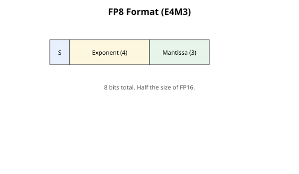
How to read this diagram
- Read left to right: sign, exponent, mantissa. Four exponent bits set the range, three mantissa bits set the precision.
- Sign (1 bit): the sign. What it is: positive or negative. Why it matters: values need both signs. What breaks: nothing, one bit is enough.
- Exponent (4 bits): the range. What it is: the power-of-two scale, bias 7, max value 448. Why it matters: four bits is the range budget. What breaks: values above 448 saturate instead of overflowing to infinity.
- Mantissa (3 bits): the precision. What it is: the significant digits. Why it matters: three bits is the precision budget. What breaks: fine detail rounds away, which block-wise scaling contains.
A raw 8-bit float cannot hold neural-network values directly. Weights and activations span orders of magnitude, and 448 runs out fast. The scale decides everything. Per-tensor scaling (one scale for a whole matrix) was the first attempt. Block-wise scaling (one scale per 128 values, or per 128×128 tile) is what made FP8 training actually work.
HBM traffic halves when values shrink from 16 bits to 8, and tensor-core throughput doubles: an H100 does 1,979 FP8 TFLOPS against 989 BF16. Memory-bound inference gets faster at almost no cost, and compute-bound training gets twice the math per second. But naive FP8 fails: one outlier stretches the single per-tensor scale so wide that every normal value rounds to zero. DeepSeek-V3 proved the fix at scale. Fine-grained block-wise quantization with E4M3 on every tensor trained a frontier model in FP8. Relative loss error stayed under 0.25 percent versus BF16.
The quantization step. For one block:
scale = max|block| / 448Then quantize, and dequantize for the matmul:
q = clip(round(x / scale), -448, 448)x̂ = q × scaleWorked (illustrative): a block whose largest value is 4.48 gets scale = 4.48 / 448 = 0.01. A value x = 0.5 becomes q = round(0.5 / 0.01) = 50, and x̂ = 50 × 0.01 = 0.5. The rounding error is at most half a code step times the scale, so the error tracks the block's own largest value. A block of small values gets a small scale and keeps its precision. A block with an outlier harms only itself.
Why blocks beat tensors. With one scale per tensor, the global max sets every scale. One outlier of 10,000 forces scale = 22.3, and a normal value of 0.5 becomes round(0.022) = 0: erased. With one scale per 128 values, the outlier harms only its own block. The other blocks quantize against their own maxima and survive. Block-wise scaling quarantines outliers.
Training recipe (DeepSeek-V3 style). Activations use 128-element groups, weights use 128×128 blocks, each with an FP32 scale, all in E4M3. Master weights (the full-precision copy the optimizer updates) stay in BF16. The code casts them to FP8 just before the matmul, so quantization error never accumulates across steps. Sensitive layers (embeddings, the output head, attention softmax) stay in BF16/FP32. Gradients get the same block treatment.
Inference recipe (microscaling standards): the MX spec from OCP (the Open Compute Project, an industry hardware-standards group) standardizes MXFP8. Every 32 consecutive values share one E8M0 scale: an 8-bit exponent-only value, a pure power of two from 2^-127 to 2^127. Cost: 8 bits per value plus 1 byte per 32 values = 8.25 bits per element. Blackwell (the GPU architecture behind the B200) adds NVFP4: 4-bit E2M1 values in blocks of 16 with an E4M3 block scale plus one FP32 tensor-wide scale. That doubles throughput again over FP8. The pattern is the same at every size: smaller elements, smaller blocks, a scale that restores range.
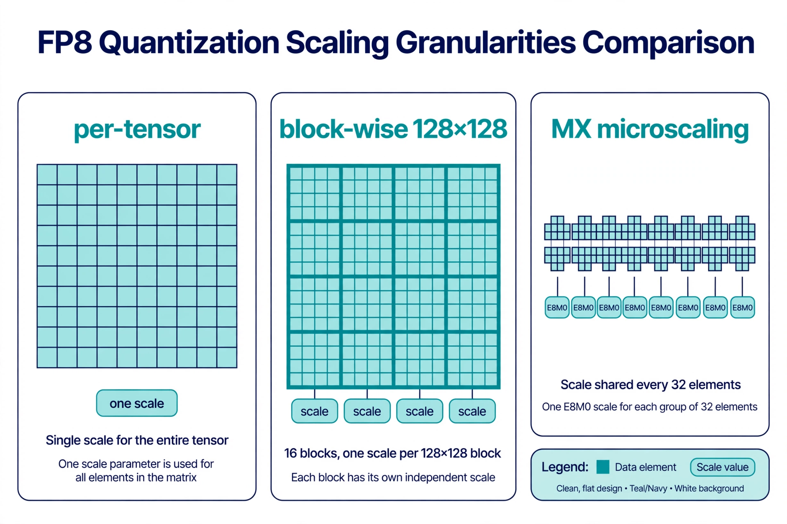
Figure 6.1. Three scaling granularities. Per-tensor: one scale for the whole matrix, set by the largest outlier. Block-wise 128×128: each tile gets its own FP32 scale, the DeepSeek-V3 layout. MX: every 32 values share one E8M0 power-of-two scale, the OCP standard Blackwell accelerates in hardware.
How to read this diagram
- Left panel: one scale. The entire matrix shares a single scale box. The scale must cover the global max, so every block's precision is set by the worst outlier anywhere.
- Middle panel: a grid of scales. The code tiles the matrix 128×128 and each tile carries its own scale. An outlier in one tile costs precision only in that tile. This is the training recipe.
- Right panel: tiny groups. The row is cut into groups of 32, each with one small E8M0 scale. Finer granularity tracks fast-changing magnitudes (like attention scores) better. The power-of-two scale keeps the hardware cheap.
- The trend. Scales get smaller and more numerous as elements get narrower: per-tensor → 128-blocks → 32-blocks. Each step quarantines outliers more tightly.
Worked example: quantize one block by hand
Block = [0.5, -3.2, 100.0, -0.01]. (Real blocks hold 128 values. Four is enough to see the mechanism.)
amax = 100.0. Scale = 100 / 448 = 0.22321.- Codes: round(x / 0.22321) = [2, -14, 448, 0]. All inside ±448, no clipping.
- Dequantize: q × 0.22321 = [0.4464, -3.125, 100.0, 0.0].
- Errors: 0.5 becomes 0.4464 (11 percent relative). -3.2 becomes -3.125 (2.3 percent). 100.0 is exact, since it set the scale. -0.01 becomes 0.0: erased, because it is smaller than half a code step.
Now the per-tensor version: suppose another block in the same tensor holds 10,000. Global scale = 10,000 / 448 = 22.32. Our block's codes become round(x / 22.32) = [0, 0, 4, 0]. The 0.5, -3.2, and -0.01 all vanish, and even the 100.0 keeps one significant digit. Block-wise scaling confines that damage to the outlier's own block. That confinement is worth more than any format tweak.
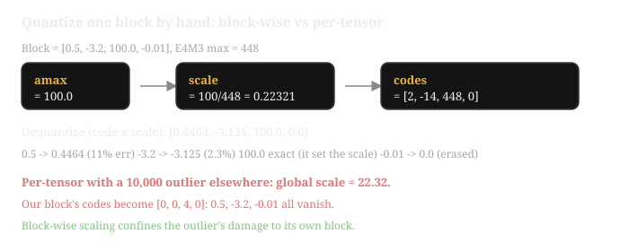
- Follow the pipeline: amax sets the scale, values become codes, codes times scale give the dequantized values.
- The red rows show the per-tensor failure: one global scale of 22.32 turns the block's codes into [0, 0, 4, 0].
- Takeaway: block-wise scaling confines an outlier's damage to its own block. That confinement matters more than any format tweak.
Common misunderstanding
"FP8 is one format, and picking it is the decision" is wrong. E4M3 and E5M2 behave differently enough to break training: E4M3 has no infinities, so overflow saturates to 448, which silently biases sums. E5M2 has infinities: overflow becomes inf, which harms everything downstream. The old rule was E5M2 for gradients because of range, but block-wise scaling removed the need. With 128-value blocks, E4M3's precision wins everywhere and its range is enough per block. The decision that matters is not the format: it is the block size and where the scales live.
Lab 6.1: Block-wise FP8 simulator
Quantize a tensor per-tensor and per-block, and measure what the outlier destroys. CPU only.
# lab61_fp8.py - simulate FP8 block-wise quantization in NumPy.
# WHAT it does: quantizes a tensor two ways (one global scale vs one
# scale per block of 128) and reports the fraction of values each way
# erases to zero. Erasure is the visible damage of a too-large scale.
import numpy as np
E4M3_MAX = 448.0 # largest finite E4M3 value; codes saturate here
def quantize(x, block_size):
# x: 1-D float32 array. block_size: values sharing one scale.
# block_size = len(x) gives per-tensor scaling (one scale total).
# Returns (codes, scales): rounded code values and their FP32 scales.
# NOTE: codes are kept as float32 here to stand in for E4M3 code
# values, which range over integers in [-448, 448] - wider than int8.
n_blocks = int(np.ceil(len(x) / block_size))
# Pad the tail so every block is full; the padding is discarded.
# WHAT BREAKS without padding: the last partial block would divide
# by a scale computed over fewer values - still correct, but the
# reshape below fails. Padding keeps the vectorized path simple.
padded = np.pad(x, (0, n_blocks * block_size - len(x)))
blocks = padded.reshape(n_blocks, block_size)
amax = np.abs(blocks).max(axis=1, keepdims=True)
# All-zero blocks get scale 1.0: 0 / 1 = 0, no division by zero.
scale = np.where(amax > 0, amax / E4M3_MAX, 1.0)
codes = np.clip(np.round(blocks / scale), -E4M3_MAX, E4M3_MAX)
return codes.reshape(-1)[:len(x)], scale.reshape(-1)
def erased_fraction(x, x_hat):
# Fraction of meaningfully-sized values (|x| > 0.05) that the
# quantization rounded to exactly zero. A value that rounds to
# zero is not noisy, it is gone: this is the damage an outlier's
# oversized scale does to every normal value sharing its scale.
big = np.abs(x) > 0.05
return float((x_hat[big] == 0).mean())
rng = np.random.default_rng(1)
# A weight-like tensor: mostly small values, one huge outlier.
x = (rng.standard_normal(4096) * 0.5).astype(np.float32)
x[1234] = 10000.0
for name, bs in [("per-tensor", len(x)), ("block-128", 128)]:
codes, scales = quantize(x, bs)
# Dequantize: x_hat = code * block_scale, the inverse of quantize.
n_blocks = int(np.ceil(len(x) / bs))
x_hat = (codes.reshape(n_blocks, bs)
* scales.reshape(n_blocks, 1)).reshape(-1)[:len(x)]
print(f"{name:10s}: {n_blocks:4d} scales, "
f"values erased {erased_fraction(x, x_hat):.1%}")
# per-tensor: 1 scale, erased ~100% (one outlier's scale zeroes
# almost every value in the tensor)
# block-128 : 32 scales, erased ~3% (only the outlier's own
# block suffers; the rest keep precision)
# WHAT BREAKS if changed: use block_size=1 (one scale per value).
# Error drops to ~0, but you now store a 4-byte scale per 1-byte value:
# 40 bits per element, worse than fp32. Block size trades accuracy for
# scale overhead; 128 and 32 are the standard compromises, not magic.
Try block sizes 32 and 1024 as well. Watch the error fall as blocks shrink and the scale count (overhead) rise. That curve is the entire design space of microscaling.
Key takeaways
- FP8 = E4M3 (±448, precise, no infinities) or E5M2 (±57,344, coarse, infinities). The scale matters more than the variant.
- Quantize per block: scale = max|block| / 448. Error tracks the block's own max, so each block contains its outliers.
- Training (DeepSeek-V3): 128 / 128×128 blocks, FP32 scales, E4M3 everywhere, BF16 master weights, sensitive layers stay high precision. Loss error under 0.25 percent vs BF16.
- Inference: MXFP8 (32 values, one E8M0 power-of-two scale, 8.25 bits/element), NVFP4 on Blackwell (4-bit, blocks of 16). Smaller elements, smaller blocks, same idea.
Next: Chapter 7 automates the fusion and halves the matmuls: torch.compile and 2:4 sparsity.
Chapter 7. torch.compile and 2:4 sparsity
Chapter 5 taught you to write Triton kernels by hand. Chapter 6 shrank the values they compute on. The last step is automation. torch.compile fuses your eager code into kernels for you. 2:4 sparsity cuts the matmul work itself in half where the hardware allows it.
torch.compile is PyTorch's compiler: you wrap a function or model in one line, and it rewrites the eager op-by-op execution into fused GPU kernels. Underneath is a four-stage pipeline. Dynamo captures your Python into a graph, AOTAutograd prepares the backward pass, Inductor optimizes and fuses the graph, and Triton generates the actual GPU kernels. Chapter 5 taught you to write Triton by hand, and this chapter shows the compiler that writes it for you.
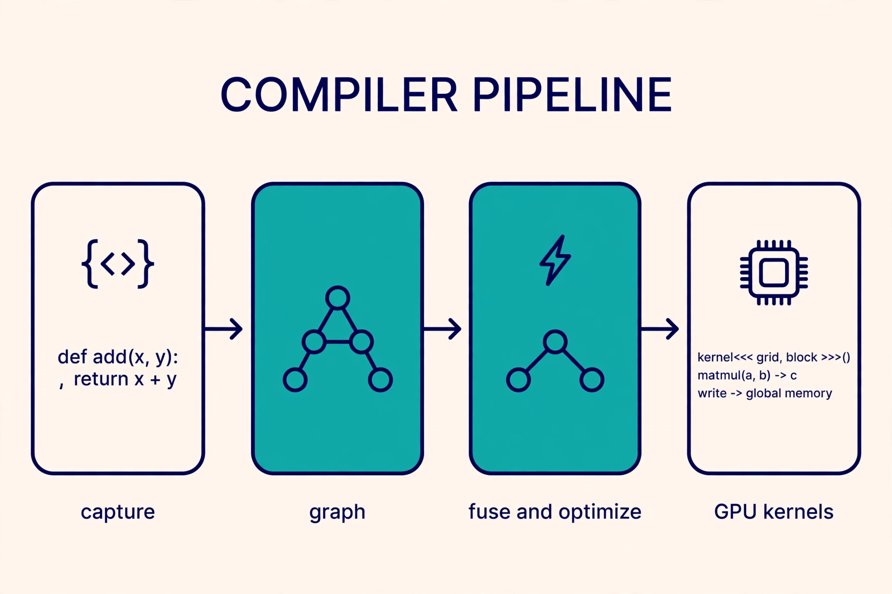
- Capture. Your plain Python function goes in. No rewrites needed on your side.
- Graph. Dynamo traces the function into an FX graph (PyTorch's graph IR) of ops.
- Fuse and optimize. Inductor merges ops and removes wasted work: this is where fusion happens.
- GPU kernels. Triton emits the final kernels that run on the GPU.
2:4 sparsity has a structure the hardware understands. In every group of 4 consecutive weights, exactly 2 are zero. Ampere (the A100's architecture generation) and later GPUs have sparse tensor cores that skip those zeros in hardware. That doubles matmul throughput: H100 FP16 goes from 989 to 1,979 TFLOPS with 2:4 sparsity, FP8 from 1,979 to 3,958.
Dense row: [ a1 a2 a3 a4 ] 2:4 sparse row: [ a1 0 a3 0 ] <- exactly 2 nonzero in every group of 4 2:4 sparse row: [ 0 b2 0 b4 ] <- a 2-bit mask records which 2 survived Why the hardware likes it: the pattern is fixed, so the sparse tensor core knows exactly where the zeros are and skips them. Unstructured sparsity saves memory but not time. 2:4 saves both.
Eager PyTorch launches one kernel per operation. y = relu(x @ w + b) launches three kernels and moves the intermediate through HBM twice with no benefit. The operations are memory-bound individually and launch-bound collectively. Fusion fixes both at once, and it is mechanical enough for a compiler to do: that is what Inductor does.
Sparsity exists because dense matmuls hit the compute roof (Chapter 4) and the only way past a roof is less work. Random sparsity cannot use tensor cores, which need dense tiles. The 2:4 pattern is the compromise the hardware team chose: regular enough for the datapath, flexible enough that pruned models keep their accuracy.
Figure 7.1. The torch.compile pipeline. Each stage answers one question: what tensor work exists (Dynamo), what gradient work (AOTAutograd), how to arrange it (Inductor), what GPU program runs (Triton).
How to read this diagram
- Dynamo. Runs your Python and records the tensor operations into an FX graph. It stops ("graph break") at things it cannot trace:
print(tensor), data-dependent Pythonifon tensor values, exotic control flow. Each break splits compilation into smaller graphs with Python running between them. - AOTAutograd. Traces the backward pass ahead of time too, so the backward graph gets the same fusion treatment as the forward.
- Inductor. The optimizer. It fuses pointwise ops into the kernels that feed the matmul (bias-add and relu fold into the matmul's epilogue, the tail code that runs after the main multiply loop), reuses memory buffers, and picks layouts. For big matmuls it keeps cuBLAS. For everything else it emits Triton.
- Triton / libraries: the generated kernels from Chapter 5's family, written by a compiler instead of by you. First call is slow (tracing plus code generation). Later calls with the same shapes reuse the compiled artifact.
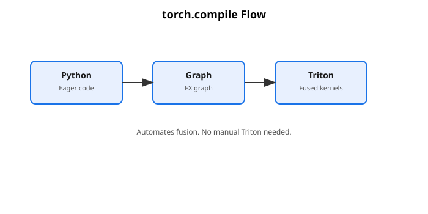
How to read this diagram
- Follow the arrows: Python in, kernels out. Each stage removes work the next stage would repeat.
- Python: your eager code. What it is: the plain function you wrote. Why it starts here: you should not rewrite working code. What breaks: graph breaks, which split compilation into pieces.
- Graph: the FX graph. What it is: your ops as a dataflow graph. Why it exists: the compiler can see and fuse whole pipelines. What breaks: dynamic shapes, which force recompiles.
- Triton: fused kernels. What it is: the generated GPU code from Chapter 5's family. Why it exists: fused kernels skip the HBM round-trips. What breaks: nothing here, this is the payoff.
Two rules from the pipeline's design. First, shapes: Dynamo specializes on tensor shapes by default, so a new shape recompiles. Pad or bucket dynamic shapes or pay recompile stalls. Second, graph breaks: every break is a fusion boundary. Code written break-free (tensor ops, static control flow) compiles into far fewer kernels.
How 2:4 sparsity works under the hood
Take a weight matrix and prune it so every 4 consecutive elements along the contraction dimension (the summed-over K axis) hold exactly 2 nonzeros. Store only the 2 values plus 2-bit indices naming their positions. The sparse tensor core reads the compressed tile and skips the zeros in hardware: same result, half the multiply-adds, half the weight traffic.
The pattern is strict: exactly 2 of 4, consecutive, along K. Random 50-percent sparsity gets nothing: the sparse datapath cannot consume it. Pruning to 2:4 is a real step. It is usually magnitude-based with calibration data (sample inputs used to measure each weight's importance), sometimes with a light retrain to recover accuracy. Done carelessly, it can cost one or two points of quality. The speedup is real only for GEMM-heavy, compute-bound layers: memory-bound kernels gain little because they wait on bytes, not math.
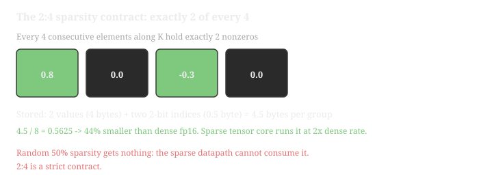
- The four cells are one group along K: green kept, dark pruned. Exactly 2 of 4, always.
- The 2-bit indices name the kept positions, which is what lets the sparse datapath skip the zeros in hardware.
- Takeaway: random 50 percent sparsity gets nothing. The pattern is strict, so pruning to 2:4 is a real step.
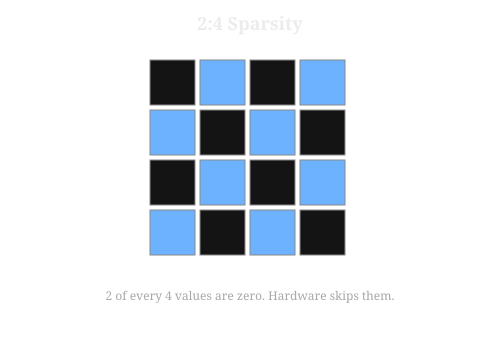
How to read this diagram
- Look at each group of four: two values kept, two zeros dropped. The hardware reads the compressed form directly.
- The pattern: exactly 2 of 4 along K. What it is: a strict structural contract. Why it exists: the sparse datapath can only skip zeros it can predict. What breaks: random sparsity, which the hardware cannot consume.
- The payoff: 2x throughput. What it is: half the multiply-adds and half the weight traffic. Why it matters: compute-bound GEMMs run twice as fast. What breaks the win: memory-bound layers, which wait on bytes, not math.
Worked example: what fusion saves on relu(x @ w + b)
Shapes: x is 512×4096, w is 4096×4096, b is 4096, all fp16 (2 bytes).
Eager, three kernels.
Matmul: reads x (4.19 MB) + w (33.55 MB), writes tmp (4.19 MB) = 41.9 MB.
Bias add: reads tmp (4.19 MB) + b (0.008 MB), writes tmp2 (4.19 MB) = 8.4 MB.
ReLU: reads tmp2 (4.19 MB), writes y (4.19 MB) = 8.4 MB.
Total: 58.7 MB moved, 3 kernel launches.
Fused (bias and relu folded into the matmul epilogue).
Reads x + w (37.7 MB), writes y (4.19 MB) = 42.0 MB, 1 launch.
Saved: 16.8 MB of traffic (29 percent) and 2 launches.
The matmul itself is compute-bound and stays the same. The win is entirely in the memory-bound tail: the pointwise ops had intensity ~1 and added only overhead. Fusion deletes the tail instead of optimizing it.
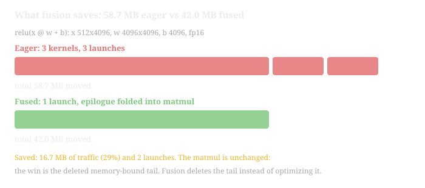
- Top bars: three red segments, one per eager kernel, each re-reading and re-writing the intermediate.
- Bottom bar: one green launch that reads x and w once and writes y once. The matmul itself stays the same.
- Takeaway: the win is the deleted memory-bound tail. Fusion deletes the tail instead of optimizing it.
2:4 compression on w: dense fp16 stores 4 values in 8 bytes. The 2:4 layout stores 2 values (4 bytes) plus two 2-bit indices (0.5 byte). That is 4.5 bytes per group:
The sparse tensor core then runs the matmul at 2x the dense rate.
Common misunderstanding
"torch.compile makes everything faster, so wrap the model and move on" is wrong. Three ways that fails: graph breaks from data-dependent control flow split your model into many small compiled pieces with Python in between. Dynamic shapes recompile every new shape, and the first slow call happens per shape, not once. Compile cannot fix a memory-bound-by-algorithm kernel: if intensity says the algorithm moves too many bytes, fusion trims the constant but the roof stays. Compile is the last 20-30 percent. Chapters 1-6 are the rest.
Lab 7.1: Fusion savings and the 2:4 pattern, on CPU
Compute the traffic saved by fusion and build a valid 2:4 mask. No GPU needed.
# lab71_fusion.py - two compiler-level wins, as CPU-checkable Python.
# WHAT it does: (1) computes HBM traffic for eager vs fused
# relu(x @ w + b); (2) prunes a weight matrix to the strict 2:4 pattern
# and verifies the structural invariant the hardware requires.
# WHY this matters: (1) is the arithmetic Inductor does when it fuses;
# (2) is the exact pattern sparse tensor cores demand - any deviation
# gets zero speedup, so the checker is the point.
import numpy as np
def traffic_fp16(numel):
# Helper: bytes for numel fp16 elements. Keeping the dtype math in
# one place avoids the classic elements-vs-bytes bug from Lab 4.1.
return numel * 2
def fusion_savings(m, k, n):
# m, k, n: GEMM dims for y = relu(x @ w + b), x: m×k, w: k×n.
# Returns (eager_bytes, fused_bytes, saved_fraction).
x = traffic_fp16(m * k)
w = traffic_fp16(k * n)
y = traffic_fp16(m * n)
b = traffic_fp16(n)
# Eager: matmul (x, w -> tmp), bias (tmp, b -> tmp2), relu (tmp2 -> y).
# The two intermediates tmp, tmp2 are each read and written once.
eager = (x + w + y) + (y + b + y) + (y + y)
# Fused: matmul reads x, w (+ tiny b in epilogue), writes y once.
fused = x + w + b + y
return eager, fused, (eager - fused) / eager
eager, fused, saved = fusion_savings(512, 4096, 4096)
print(f"eager {eager/1e6:.1f} MB, fused {fused/1e6:.1f} MB, "
f"saved {saved:.0%}")
# eager 58.7 MB, fused 41.9 MB, saved 29%
def to_2_4(w):
# Prune w to the 2:4 pattern along its last axis (the K dim).
# WHAT: in each consecutive group of 4, keep the 2 largest-magnitude
# values, zero the rest. Magnitude pruning is the simple version;
# production pipelines use calibration data, same pattern.
# WHY groups of 4 on K: the sparse tensor core's datapath reads
# exactly this shape. Random sparsity, 2:8, or K-misaligned groups
# cannot use the sparse units and get no speedup at all.
assert w.shape[-1] % 4 == 0, "groups of 4 must tile the last axis"
g = w.reshape(*w.shape[:-1], -1, 4)
# Indices of the 2 smallest magnitudes per group: these get zeroed.
kill = np.argsort(np.abs(g), axis=-1)[..., :2]
np.put_along_axis(g, kill, 0.0, axis=-1)
return g.reshape(w.shape)
def check_2_4(w):
# Verify the structural invariant: EVERY group of 4 holds exactly
# 2 nonzeros. The hardware trusts the metadata; one bad group
# silently corrupts the compressed layout. This check is mandatory.
nnz = (w.reshape(-1, 4) != 0).sum(axis=1)
assert (nnz == 2).all(), f"violating groups: {np.unique(nnz)}"
return True
rng = np.random.default_rng(2)
w = rng.standard_normal((256, 1024)).astype(np.float32)
w_sparse = to_2_4(w)
assert check_2_4(w_sparse)
# Compression: 2 fp16 values (4 B) + two 2-bit indices (0.5 B) per 4
# dense values (8 B) -> 4.5/8 = 56% of dense size, 2x sparse throughput.
print("PASS: 2:4 pattern valid;",
f"{(w_sparse != 0).mean():.0%} of weights nonzero")
# WHAT BREAKS if changed: prune to "2 of every 8" instead. check_2_4
# fails (it is not the hardware pattern), and no sparse tensor core
# will accelerate it. The pattern is a hardware contract, not a hint.
On a GPU box with a 2:4-capable card, the next step is torch.compile on a model whose linears are 2:4-pruned. Compare step time against the dense compiled model. Expect the win only in compute-bound GEMMs.
Key takeaways
- torch.compile = Dynamo (capture) → AOTAutograd (backward) → Inductor (fuse, plan) → Triton (GPU code). Each stage answers one question.
- Fusion deletes the memory-bound tail: relu(x @ w + b) saves 29 percent of traffic and 2 launches in the worked example.
- Graph breaks and dynamic shapes are the two traps. Write break-free code and stable shapes.
- 2:4 sparsity: exactly 2 nonzeros per consecutive 4 along K. Doubles sparse tensor throughput (H100 FP8: 1,979 → 3,958 TFLOPS). Any other pattern gets nothing.
Next: the practice questions drill every chapter's numbers, then the volume closes.
Practice questions
Q1. A kernel launches 8,192 blocks of 128 threads on an H100 (132 SMs, 2,048 threads/SM). Roughly how many waves of blocks run, and why does launching far more blocks than SMs help?
A: 1 wave, but more blocks than SMs wastes scheduling time.
B: about 4 waves, because extra blocks form a queue that keeps every SM busy as blocks finish.
Answer: B. Why B is right: 2,048 / 128 = 16 blocks per SM, so 132 × 16 = 2,112 blocks stay resident at once. 8,192 / 2,112 ≈ 3.9 waves.
A, wrong: blocks are the unit of assignment and they queue with no cost. Launching only 132 blocks would leave SMs idle the moment any block finishes early, because the queue is the load balancer.
Q2. A warp of 32 threads reads float32 values with thread t reading element 4*t. How many 128-byte transactions does the read need, and what is the waste factor?
A: 4 transactions, 4x waste.
B: 32 transactions, 32x waste.
Answer: A. Why A is right: thread t touches byte 16*t, so bytes 0..496 span 512 bytes = 4 segments of 128 bytes. 4 transactions move 512 bytes for 128 useful bytes: 4x waste.
B, wrong: that is the stride-32 case (element 32*t), where each thread lands in its own segment. Stride 4 packs 8 threads per segment.
Q3. A kernel uses 256-thread blocks, 64 registers per thread, 64 KB shared per block on an H100. What is its occupancy, and what binds it?
A: 50 percent, bound by registers.
B: 37.5 percent, bound by shared memory.
Answer: B. Registers: 65,536 / (256 × 64) = 4 blocks. Shared: 228 / 64 = 3.56 → 3 blocks. Threads: 2,048 / 256 = 8 blocks. Shared memory binds at 3 blocks × 8 warps = 24 warps: 24 / 64 = 37.5 percent.
A, wrong: registers allow 4 blocks, but shared memory only fits 3, and the smallest cap always wins, so check all three before answering.
Q4. A kernel does 10¹² FLOPs and moves 10¹² bytes on an H100 in FP8 (ridge ≈ 591 FLOPs/byte). It is slow. What is the first thing to check, and why?
A: whether it uses tensor cores, because the kernel is compute-bound.
B: the achieved HBM bandwidth, because the kernel is memory-bound and it may already hit the roof.
Answer: B. Intensity = 10¹² / 10¹² = 1 FLOP/byte, far left of the ridge at 591, so the kernel is memory-bound. Its ceiling is 3.35 TB/s × 1 = 3.35 TFLOPS. If measured bandwidth is near peak, the algorithm must change (fuse, lower precision). Only if bandwidth is far below peak do suspects 2-5 apply.
A, wrong: tensor cores help right-of-ridge kernels, but left of the ridge the math units starve on bytes, not on instruction choice.
Q5. In the fused-softmax Triton kernel, masked-out lanes load with other=float("-inf") instead of 0.0: why?
A: both work, and -inf is just a convention.
B: -inf keeps the max and the sum correct. It can never win tl.max, and exp(-inf) = 0 adds nothing to the denominator. 0.0 would add a phantom exp(0 - max) term to the sum.
Answer: B. The masked lanes hold padding, not data. The value -inf is the identity element for max and contributes exactly 0 to the exp sum. Padding stays invisible to the math.
A, wrong: with 0.0, a short row's padding contributes exp(-row_max) per padded lane to the denominator, shrinking every real probability. The rows would no longer sum to 1.
Q6. A team quantizes an LLM to FP8 with one scale per tensor and watches small-weight layers collapse to zero. Block-wise scaling with 128-element blocks fixes it. What is the mechanism?
A: smaller blocks use a different FP8 format with more range.
B: the outlier sets the scale only inside its own block, so other blocks quantize against their own maxima and keep their precision.
Answer: B. Per-tensor scale = global max / 448: one outlier of 10,000 forces a scale of 22.3, and values like 0.5 round to 0. Per-block scales quarantine the outlier, so only its block pays.
A, wrong: the format is the same E4M3 in both cases. Granularity, not format, is the fix.
Last verified: September 2026. I checked the hardware numbers below against public sources this month. H100 SXM: 132 SMs, 80 GB HBM3, 3.35 TB/s bandwidth. FP8 1,979 TFLOPS dense, BF16 989 TFLOPS, 50 MB L2, 4th-gen Tensor Cores. B200: 148 SMs, 192 GB HBM3e, ~8 TB/s. FP8 4,500 TFLOPS dense, FP4 9,000 TFLOPS dense, NVLink 5 at 1.8 TB/s.
Per-SM limits: 2,048 threads (64 warps), 65,536 registers, 228 KB shared memory, 1,024 threads per block. Triton APIs: @triton.jit, tl.program_id, tl.arange, masked tl.load/tl.store with other, tl.constexpr, triton.next_power_of_2, num_warps. FP8 formats: E4M3 max 448 with no infinities, E5M2 max 57,344. DeepSeek-V3 recipe: 128 and 128x128 blocks, FP32 scales, E4M3 on all tensors, under 0.25% relative loss error vs BF16. OCP MX spec v1.0: block of 32, E8M0 scale, MXFP8 at 8.25 bits/element. NVFP4: E2M1 elements, blocks of 16, E4M3 plus FP32 scales.
I also verified this month: the torch.compile stages (Dynamo, AOTAutograd, Inductor, Triton), graph breaks, and 2:4 structured sparsity on Ampere+ tensor cores.
UNVERIFIED: the shared-memory and L2 latency figures (~20-30 and ~200 cycles) are typical published values, not measurements from one specific card. B200 L2 is 126 MB in the CUDA tuning guide, but sources differ, so the worked examples use the H100's 50 MB only.
Watch and go deeper
Three videos that earn their minutes, each matched to the chapters above. Speed controls (0.5x to 2x) appear on every player.
Go deeper
- Triton: an intermediate language and compiler (2019) The original Triton paper: blocks, not threads, and why that design wins.
- Triton tutorials The official hands-on tutorials: vector add, softmax, matmul, in order.
- FlashAttention: Fast and Memory-Efficient Exact Attention The paper that made kernel design famous: IO-aware exact attention with tiling and recomputation.
- How to Scale Your Model: All About Roofline Google DeepMind's modern restatement of the roofline model, applied to real accelerators.
- torch.compiler documentation The official torch.compile reference: Dynamo, AOTAutograd, Inductor, and backends.